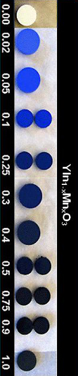

| |
Le bleu « Mn-YIn »

Cet article a été amplement modifié
suite à une prise contact directe avec l'auteur de cette invention, Mas
Subramanian [1]
(interview ci-dessous).
Nous pardonnera-t-on cette
appellation mystérieuse et sans garantie, rendue nécessaire aussi longtemps
que ce nouveau pigment ne jouira pas d'un intitulé officiel ? « Mn-YIn » réfère ici aux éléments manganèse (Mn),
yttrium (Y) et indium (In) qui le composent - on a oublié l'oxygène pour faire
court mais la formule exprimée sur l'image ci-contre donne ces indications.
Dans la foulée, on remarque d'ailleurs qu'il est inutile d'ajouter un blanc
ou un noir pour modifier la luminosité puisque il suffit de modifier les
proportions des composants entre eux.
La découverte d'un nouveau bleu est bien sûr un joyeuse nouvelle pour qui aime la couleur, mais dans une première version de cet
article, nous avons émis de sérieuses réserves à cause de la tonalité
précisément un peu trop enthousiaste et précipitée, peut-être, de la presse anglo-saxonne.
Citons cette première version : « Tout d'abord, évitons de reproduire une erreur
(...) consistant à appeler cette couleur « bleu de manganèse ».
(...) les services de communication (...) semblent oublier la
préexistence d'un autre bleu de manganèse (lien).
(...) il s'agit là d'un
point très important à différent titres :
* comment comparer
l'ancien et le nouveau bleu de manganèse ou son imitation (phtalocyanine de
cuivre) devenue classique sur les palettes ?
Cette imitation n'est d'ailleurs pas née sans raison : en premier lieu elle est belle
et plutôt stable, mais aussi utile car comme le signalent
François Perego et Dotapea, le pigment original a un
pouvoir siccatif (pour la peinture à l'huile) (...). Savoir que la molécule est
agencée en octaèdres comme la documentation l'indique ne nous renseigne pas
du tout sur l'intérêt de cette découverte. Ce pigment est-il plus ou moins
siccatif que l'ancien, qu'apporte-t-il ?
* considéré comme toxique par
différents intervenants (auteurs spécialisés, distribution commerciale),
« l'ancien » bleu, BaSo4+BaMnO4, reste à ce jour une
énigme toxicologique, comme le manganèse en général. Cet atome est un
constituant normal du corps humain, mais il existe au moins une pathologie
bien connue, le manganisme, que l'on peut lui attribuer et peut-être plus
particulièrement à ses oxydes, ou à l'aptitude que ceux-ci ont à changer de
valence en influençant les « systèmes » du cerveau. Le manganisme est une
affection très grave et la toxicité du manganèse est un sujet difficile,
toujours en cours d'étude comme chacun peut le constater à la lecture du
Reptox notamment.
Or, les communiqués et articles concernant le « nouveau » bleu de manganèse
indiquent que celui-ci aurait un impact environnemental bénin. Cela semble
un peu rapide. »
Fin de citation. Nous assumons ces questionnements
étant donné le manque d'informations à l'époque (décembre 2009).
Qu'en est-il finalement ? Mas Subramanian a
répondu à nos questions en février 2010, ce qui nous permet de donner un
éclairage plus précis.
Voici le dialogue :
|
Dotapea : (...) On a more practical point of view, for the layman or
the average painter, there are so far not so many details about your
discovery on the internet. More precisely, could I kindly ask you to tell me
what are the main differences between your pigment and the usual manganese
blue, namely (BaSo4+BaMnO4) in terms of:
- stability...
|
|
|
Dotapea : (...) Cependant, d'un point de
vue concret, pour le peintre décoratif ou artistique, on ne trouve
qu'assez peu d'informations sur votre découverte. En particulier,
puis-je vous demander ce qui distingue votre pigment de l'habituel bleu
de manganèse (BaSo4+BaMnO4) en termes de :
- stabilité...
|
|
Mas Subramanian :
Stable to very high temperatures 1200C.
|
|
|
Mas Subramanian : C'est stable jusqu'à de
très hautes températures, 1 200°C. |
|
Dotapea :
- ... reactivity towards painting oils. You may know
that the usual manganese blue had poor siccative qualities...
|
|
|
Dotapea :
- ... de réactivité avec les peintures grasses à l'huile. La
siccativité était le défaut majeur de l'ancien bleu de manganèse...
|
|
Mas Subramanian : I
am not sure about exact paint oils. But it has been tested in paint
formulations by a company and found to be very good and better than Co-blue.
|
|
|
Mas Subramanian :
Je n'ai pas de certitudes sur des huiles à peindre. Mais cela a été
testé par une entreprise dans des formulations destinées à la peinture
et classé comme très bon et meilleur que le bleu de cobalt. |
|
Dotapea :
- ... toxicity, since manganese is an element which
toxicity is today still uncertain. Actually art dealers and most sources
consider manganese blue as being toxic, hence his poor success.
Also, from a strict "painter's point of view" it
is hard to understand why the presence of Y and In in an octahedral
structure good yield a safer pigment, less toxic and maybe cheaper. May I
ask you for your opinion in a few words?
|
|
|
Dotapea :
- ... et enfin d'innocuité puisque le manganèse est encore à ce
jour un matériau dont on connaît assez mal l'impact toxicologique. Ici
très concrètement, les détaillants et les auteurs Beaux-arts
considèrent l'ancien bleu de manganèse comme un toxique. Il n'a donc
n'a pas reçu un grand succès.
Ce n'est pas très facile d'un point de vue "purement peinture" de
comprendre les rôles de l'yttrium, de l'indium et de la structure
octaédrique, et au-delà pourquoi cela en fait un pigment "plus
rassurant, plus fiable et plus accessible". Pourriez-vous en dire
quelques mots s'il vous plaît ? |
|
Mas Subramanian : In
Mn blue Ba is more toxic and is a heavy element. The stability of pigment to
temperatures, acid etc. makes it more stable and none of the elements is
leached out.
It is not the coordination of Mn makes it less
toxic.
|
|
|
Mas Subramanian :
Dans le bleu de manganèse, le baryum est plus
toxique et c'est un élément lourd. Le nouveau pigment est stable face à
la température, l'acidité, etc., et aucun des éléments n'est exfiltré.
Ce n'est pas la coordination/configuration du manganèse qui le rend
moins toxique. |
Dotapea : Last, would
it be possible that you send me some samples of your new dye?
|
|
|
Dotapea :
Vous serait-il possible de nous faire parvenir des échantillons ?
|
|
Mas Subramanian : May be possible in the near
future as we are working with a company to manufacture it. I will keep you
posted. |
|
|
Mas Subramanian : C'est possible dans un
futur proche puisque nous travaillons avec une entreprise pour
l'industrialiser. Je vous tiendrai informé. |
On peut donc avancer sans trop se risquer que Mas
Subramanian et son équipe viennent de créer un composé très intéressant et
qu'il reste des points à éclaircir, ce qui devrait se faire à l'occasion de
l'industrialisation. Dès l'arrivée des échantillons nous pratiquerons
quelques essais et à notre tour nous vous tiendrons informés.
Yttrium et indium
La documentation
(toute la documentation anglophone et francophone à ce jour) utilise en toutes lettres le mot manganèse, jamais le mot yttrium ni le mot
indium, toujours abrégés (Y, In).
Un choix de matériaux qui surprend car on a rarement affaire à de tels
métaux dans l'univers pigmentaire.
Il existe assez peu d'informations sur leur toxicité. L'yttrium serait
spontanément combustible à l'air en tant que métal pur, c'est tout et c'est
trop peu pour en tirer des conclusions.
Le procédé de fabrication du « bleu Mn-YIn » est présenté comme peu coûteux. En fait,
comparativement au bleu de manganèse ancien, le bleu Mn-YIn vaudra forcément
beaucoup plus cher car l'yttrium et l'indium sont aujourd'hui des métaux
relativement coûteux. Mais ces données peuvent changer en fonction du
marché.
Fabrication
Les échantillons sont préparés en chauffant les
réactifs sous atmosphère ambiante (à l'air). Oxyde d'yttrium Y2O3
et d'indium In2O3. L'oxyde d'yttrium a été séché à
850°C préalablement. Les quantités adéquates de réactifs ont été mélangées
soigneusement dans l'éthanol avec un mortier d'agate. Le mélange est ensuite
pressé en pastille sous une pression de 40kg/m2. Les pastilles
sont calcinées sous air pendant 12h à 1200°C puis deux fois sous air à
1300°C avec re-broyages intermédiaires. Vitesse de chauffage 300°C/heure.
(grâce à
l'aide de Jean-Louis)
Textes de référence
La page de l'équipe scientifique
Résumé gratuit et accès à un contenu complet :
ici.
Conclusion
Si le magazine Pour la science (édition française de
Scientific American), principal relais initial de cette information en
Francophonie, a cru utile de publier un article dithyrambique (et plutôt
caricatural [2]) au sujet de cette
découverte soi-disant due au hasard, et si la presse américaine a présenté
l'affaire comme une véritable copie de l'histoire de la découverte fortuite
du futur bleu outremer (lapis-lazuli synthétique) par Vauquelin -
lien -, Dotapea
cherche à présenter cette invention très intéressante d'un manière plus
simple et pragmatique.
Les premières réponses de Mas Subramanian et les futurs
tests sur des échantillons nous incitent à nous ouvrir sur une description
précise de cette prometteuse nouvelle couleur.
______
[1] Department
of Chemistry, OSU, Université de l'Oregon, Etats-Unis.
[2] On peut en juger au titre : « Un pigment bleu
rival du lapis-lazuli ». Cette affirmation n'est malheureusement étayée
que par une photo... de
lapis-lazuli !
Cliquer sur le bouton « Précédent »
de votre navigateur pour revenir dans le corps du texte.
Retour
début de page
|
|

 Communication
Communication


|
|